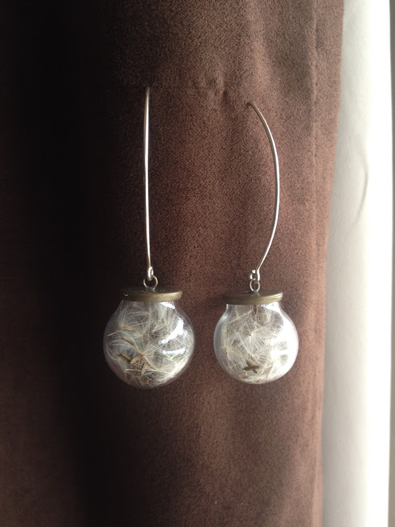

A Craft Business
Terrarium jewelry acts as keepsake that contains any item of importance to you. From dried flowers of your wedding bouquet to sand and shells from a special beach you've visited, I'd love to create a one of a kind item for you or yours. The photos here are just a sample of what could be made for you!

- 